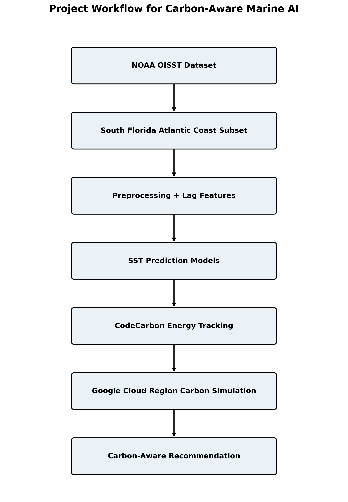
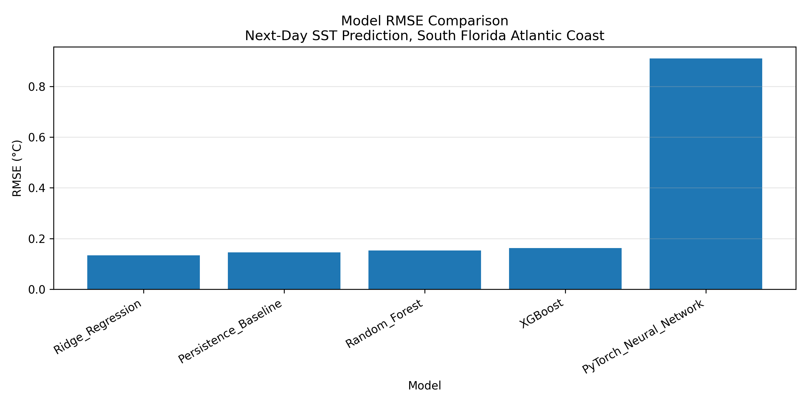
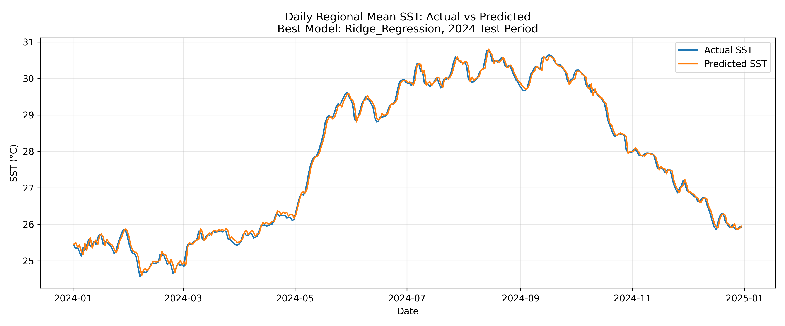
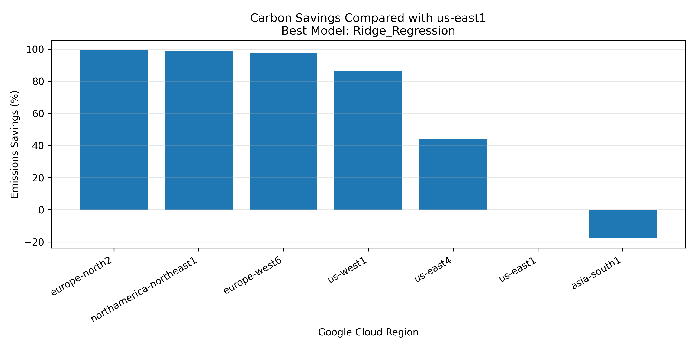

Carbon-Aware Marine AI for Sustainable SST Forecasting
INFO
This case study compares next-day sea surface temperature forecasting models and then estimates how the same small offline training workload would differ across selected cloud regions. The supplied Spring 2026 course paper and result files support a 2021-2024 NOAA OISST study period; no publication status is claimed.
RESEARCH QUESTION
How accurately can several machine-learning approaches predict next-day SST along the South Florida Atlantic Coast, how do their accuracy and estimated compute impacts compare, and what estimated cloud-emissions difference results from placing a fixed offline workload in regions with different reported grid carbon intensities?
STUDY AREA AND DATA
The analysis uses daily NOAA Optimum Interpolation Sea Surface Temperature data from January 1, 2021 through December 31, 2024 for Atlantic-side coastal waters from the Biscayne and Miami area toward West Palm Beach. The supplied summary records 1,461 daily time steps, 42 regional grid cells before cleaning, and 32 retained ocean grid cells.
FORECASTING WORKFLOW
The pipeline cleans invalid coastal and land-adjacent cells, creates location, seasonal, current-SST, lag, and rolling features, trains on January 15, 2021 through December 31, 2023, and evaluates on January 1 through December 30, 2024. It compares persistence, Ridge Regression, Random Forest, XGBoost, and a PyTorch neural network.

MODEL COMPARISON
| Model | MAE (°C) | RMSE (°C) | R² |
|---|---|---|---|
| Ridge Regression | 0.0984 | 0.1336 | 0.9958 |
| Persistence baseline | 0.1083 | 0.1451 | 0.9950 |
| Random Forest | 0.1119 | 0.1529 | 0.9944 |
| XGBoost | 0.1182 | 0.1622 | 0.9937 |
| PyTorch neural network | 0.7273 | 0.9103 | 0.8031 |

RESULTS
Ridge Regression achieved the lowest evaluated RMSE, 0.1336 °C, compared with 0.1451 °C for the persistence baseline. The supplied analysis reports a 7.92% RMSE improvement over persistence for this dataset and split. This is a limited regional test result, not a universal claim about SST forecasting.

CARBON-AWARE EXECUTION
CodeCarbon estimated local training energy and emissions for the trained models. The cloud comparison then reused the recorded Ridge Regression workload energy with 2024 regional grid-carbon data; the model was not physically trained in every region. For the evaluated comparison, simulated emissions were approximately 99.53% lower for europe-north2 than for the us-east1 reference. This is an estimated regional scenario for one very small offline workload, not directly measured physical emissions or a universal carbon-saving rate.

LIMITATIONS
The study uses one regional subset, one temporal split, and a small compute workload. CodeCarbon values are estimates, and the cloud-region values are simulations based on reported grid carbon intensity rather than repeated physical runs in each location. Region choice in practice also depends on latency, cost, data movement, privacy, service availability, and operational requirements. The findings should not be generalized to all models, datasets, regions, or marine forecasting tasks.